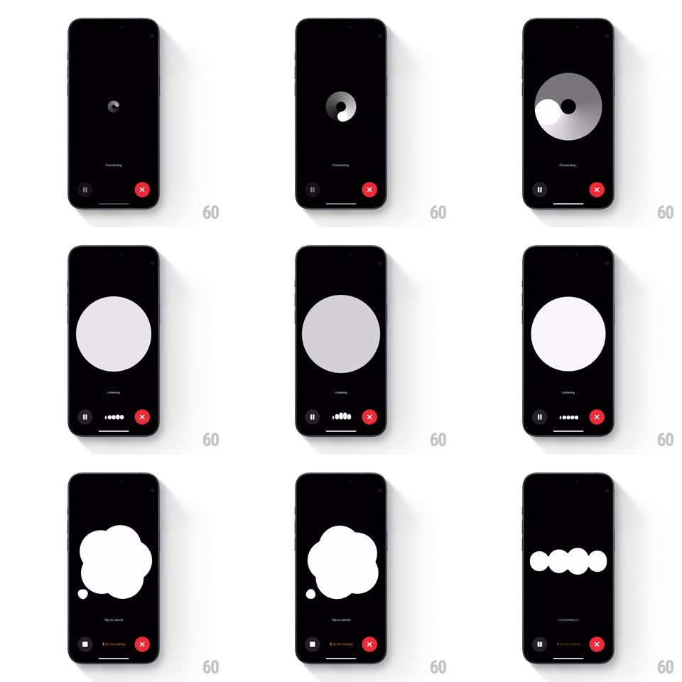

Media
Frame-by-frame

Rebuild this animation 1:1: ChatGPT's voice mode - a single white orb on black that morphs through connecting, listening, and speaking states as organic fluid shapes.

Rebuild this animation 1:1: ChatGPT's voice mode - a single white orb on black that morphs through connecting, listening, and speaking states as organic fluid shapes.
## Integration
Integration: stack-agnostic spec - springs given as stiffness/damping, timed motions as duration + curve; map every value to your framework and animation library of choice.
## Scene
From the chat screen, voice mode opens to a full black canvas with a small dot that grows into a large white circle ("Start Speaking" / "Listening"), then morphs into an amoeba-like blob while the assistant speaks, and resolves into a row of white rounded bars during playback. Pause and red end-call buttons sit at the bottom with state captions.
## Motion spec
Pattern: organic state morphing orb.
- Entry: the chat's composer dot expands to full-screen black (circle-mask expand, 350ms) with the small white dot persisting at center.
- Connecting: the dot pulses (scale 1 to 1.3, 800ms ease-in-out loop) with a rotating conic shimmer sweep (2s per revolution) under the "Connecting" caption.
- Listening: the dot grows into a large perfect circle (spring ~260/20) that breathes subtly (scale +-2%, 2.4s) and reacts to mic input (radius += amplitude * 12%, per-frame).
- Speaking: the circle's border melts into 5-7 lobes that travel around the circumference (each lobe a traveling gaussian bump, ~1.5s per orbit, offsets desynced) - the shape stays white, filled, and centered; a small satellite dot orbits and occasionally merges in.
- Playback: the blob collapses into a row of 4-5 rounded bars (morph over 300ms) that bounce heights with the audio envelope (spring ~400/18 per bar).
- State captions crossfade (200ms) under the orb: Connecting / Start Speaking / Listening / Tap to interrupt.
## Calibration
- All states are one continuous shape - never cut between them; every transition is a morph (250-400ms).
- White shape on pure black only; the single red accent is the end button.
## Reduced motion
Orb fades between static state shapes; no audio reactivity.
## Don't miss
- The blob is smooth and liquid (no polygon edges); lobes deform the outline, they don't overlay.
- Captions are small, centered, gray-white - the orb owns the screen.